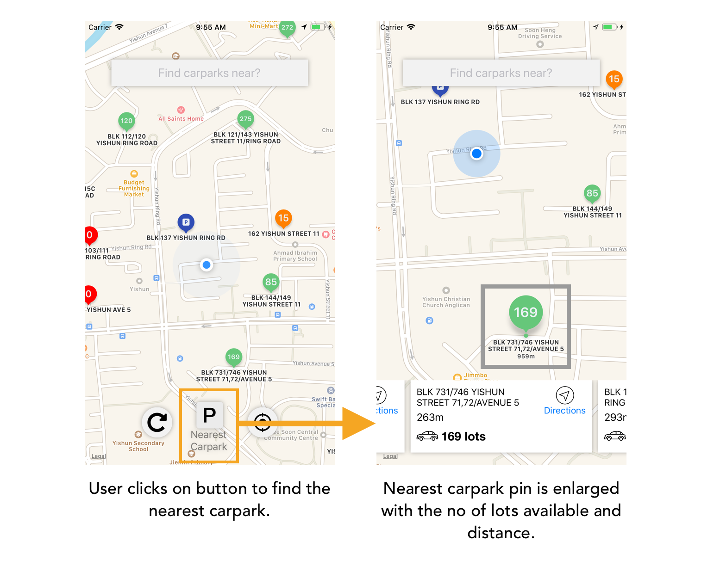
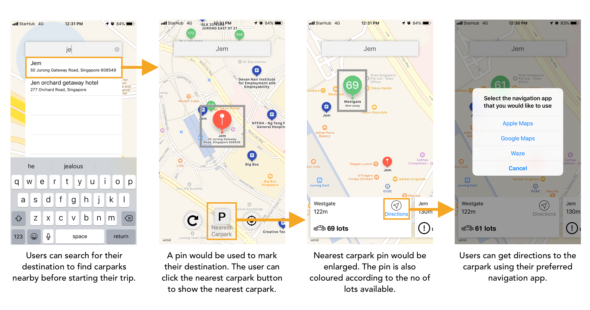

User Study
My role was to design the page where users will enter their reviews. The following are some of the questions that was extracted from our group’s survey. These questions are the ones which are relevant to my part of the project.
For our group’s user study, we used a survey for it. One of the questions was used to identify if users felt that Carousell’s review system is biased towards positive reviews. Based on the results, users agreed that it was biased towards positive reviews. This shows that there was a need for our solution.
Another question was to determine what content should be on the review page. The question was “Which of the following is more helpful when posting a review?”. 50% of the users wanted a set of questions which will help guide them through the review and also a text box for them to enter any content. 30% of the users only wanted the textbox.
Prototype
I started on a low-fidelity using Balsamiq to create a rough layout of the review page first. I didn’t want to create a high-fidelity prototype straight away as I wanted to get some user input first to ensure that I am on the right path before spending more time on it.

This is the first iteration of the prototype. The phone has been stretched longer to fit the content in it. It will be a scrolling view on an actual device.
Prototype Evaluation
After completing this prototype, I asked a friend who is a frequent user of Carousell for his feedback. The first issue that he immediately said that the scrolling was too much of a hassle and he will give up writing a review.
He liked that there were questions to help with the review as he has seen many positive reviews but it only says "Great seller, will deal with again". Even though the review is positive, he can't get any other information out of it other than the buyer won't mind purcharsing from the seller again. Another question that was suggested by him is “Are you happy with the product?”. This question would help the buyer assist with the purchase of the product.
Lastly, he felt that there isn't any place for him to write comments not related to the product or seller.
Prototype Revision
I revised the prototype using his feedback. In the new prototype, the review is broken into “Seller” and “Product” stages to reduce the scrolling. A progress bar was added at the bottom to help the user identify which stage of the review he is at. I’ve also added the new question which he mentioned and also a textbox for any other general comments.


This is the second iteration of the prototype.

Searching for Parkings Lots Workflow
